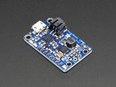

Where would be the best point to inline a lithium battery and charger in-line with the main USB power and data port? The idea would be to add an internal battery to the axoloti with inline charging circuit that would be able to:
- Power the device and the USB Host port when the Micro-USB port is disconnected
- Charge the battery and keep the device powered when the Micro-USB port is connected
- Add a power switch so the device can be powered off ( Ideally while the USB port is still charging the battery )
I'm thinking about a circuit that would be similar to Adfruit PowerBoost 1000 Charger paired with a good sized battery.

I'm planning to turn my Axoloti into my main portable controller interface, for a battery powered minimalist jam setup.
Thoughts?